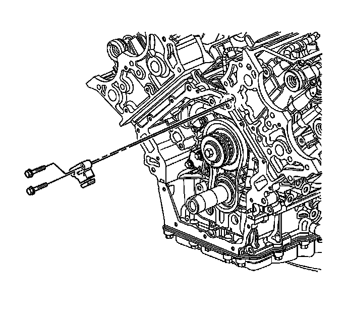
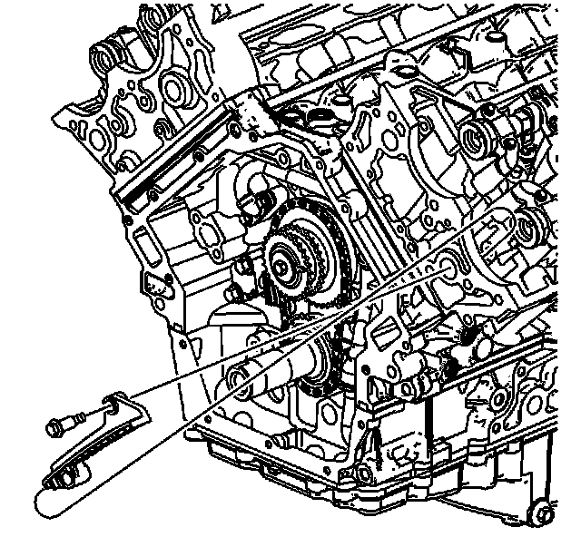

Secondary Camshaft Drive Chain Guide Replacement - Left
Secondary Camshaft Drive Chain Guide Replacement - Left Side
Tools Required
* J 39946 Crankshaft Socket
* EN 46328 Camshaft Holding Tool
Removal Procedure

1. Remove the left secondary camshaft tensioner. Refer to Secondary Camshaft Drive Chain Tensioner Replacement - Left Side (Secondary Camshaft Drive Chain Tensioner Replacement - Left) .

2. Remove the left camshaft position actuator housing. DO NOT remove the camshaft actuator solenoids from the housing. Refer to Camshaft Position Actuator Housing Replacement - Left Side (Camshaft Position Actuator Housing Replacement - Left Side) .

3. Using the J 39946 , rotate the crankshaft until both camshaft position actuator timing marks (5, 7) are at the top of their rotation.

Caution: Refer to Camshaft Holding Tool Caution (Camshaft Holding Tool Caution) .
4. Install the EN 46328 (1) to the camshafts (2).

Important: The secondary timing chain has black links that are used for alignment when the primary and secondary timing gear and chain assemblies are being installed together. IT IS NOT NECESSARY for the black chain links to be aligned with the camshaft actuator timing marks when the secondary chain and gear components are being serviced separately.
5. Use a paint stick to create a mark (1) on the timing chain link adjacent to each camshaft position actuator timing mark (2, 3).
6. Use a paint stick to create a mark on a primary chain link and intermediate primary chain sprocket tooth adjacent to the primary chain link.

Notice: Refer to Torque Reaction Against Timing Drive Chain Notice (Torque Reaction Against Timing Drive Chain Notice) .
7. Use an open end wrench on the hex cast into the left exhaust camshaft to prevent the camshaft from rotating when loosening the camshaft oil control valve.

8. Loosen and remove the left exhaust oil control valve.
9. Slide the left exhaust camshaft actuator off of the camshaft, disengage the sprocket teeth from the secondary timing chain, and remove the actuator.

10. Remove the secondary camshaft drive chain guide bolt.
11. Remove the left secondary camshaft drive chain guide.
12. Clean and inspect the camshaft timing drive components. Refer to Camshaft Timing Drive Components Cleaning and Inspection () .
Installation Procedure
1. Position the left secondary camshaft drive chain guide in through the left front cylinder head as shown.
Notice: Refer to Fastener Notice (Fastener Notice) .
2. Install the left secondary camshaft drive chain guide bolt.
Tighten the secondary camshaft drive chain guide bolt to 25 N.m (18 lb ft).
3. Install the left exhaust actuator to the secondary chain, ensuring that the actuator timing mark is aligned with the chain link that was marked during disassembly.
4. Loosely install the oil control valve to secure the exhaust actuator to the camshaft.
Notice: Refer to Torque Reaction Against Timing Drive Chain Notice (Torque Reaction Against Timing Drive Chain Notice) .
5. Use an open-end wrench on the hex cast into the camshaft in order to prevent the camshaft from rotating when tightening the oil control valve.
Tighten the oil control valve to 120 N.m (89 lb ft).
6. Install the left secondary camshaft drive chain tensioner. Refer to Secondary Camshaft Drive Chain Tensioner Replacement - Left Side (Secondary Camshaft Drive Chain Tensioner Replacement - Left) .

7. Ensure that the previously created paint marks (1, 3) still line up with the sprocket timing marks (2, 4).
8. Install the left camshaft actuator housing. Refer to Camshaft Position Actuator Housing Replacement - Left Side (Camshaft Position Actuator Housing Replacement - Left Side) .